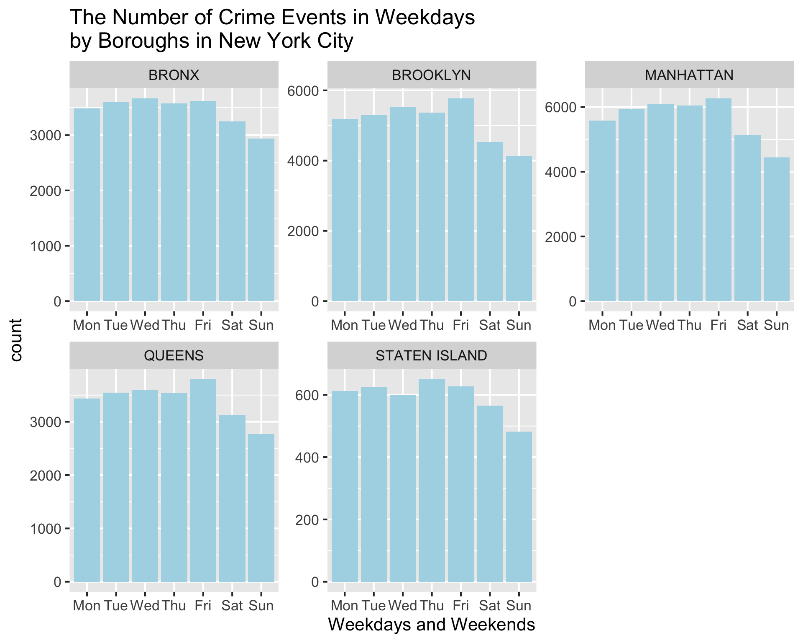
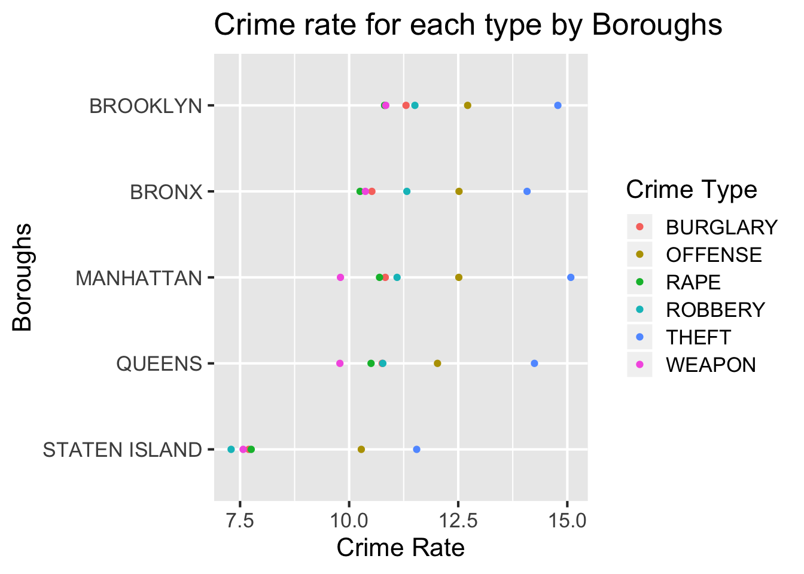
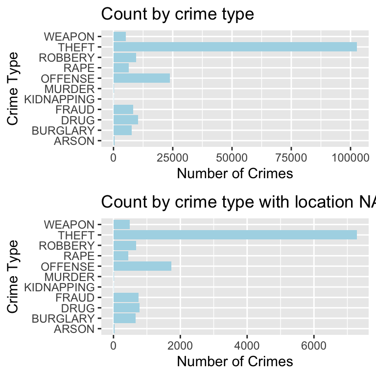

Chapter 7 Because we are all in the age group 18-24, and we want to find how we are related to the victims of crime events, first we plot the distribution of 5 age groups from <18 to 65+ in each borough, and the result is as following:
df_age <- subset(df_select, as.character(VIC_AGE_GROUP) %in% c("<18", "18-24", "25-44", "45-64","65+") )
ggplot(df_age, aes(VIC_AGE_GROUP))+
geom_bar(fill="lightblue")+
xlab("Age Groups")+
ggtitle("The Distribution of Age Groups of Victims by Borough in New York City")+
facet_wrap("BORO_NM", scale="free")
7.1 According to the graphs, we found that for each borough, the pattern of victims age group is similar, where the 25-44 age group has the largest number of victims, and the 45-64 age group has the second largest number of victims. For this plot it seems that the 18-24 age group among different boroughs is not apparent, so we extract the 18-24 group of each borough and draw the following barplot:
7.2 buyao
Since most of full time students are in the age group 18-24, and we want to find how these students including us are related to the victims of crime events,so we extract the 18-24 group of each borough and draw the following barplot:
df_age <- subset(df_select, as.character(VIC_AGE_GROUP) %in% c("<18", "18-24", "25-44", "45-64","65+") )
df_age2<-subset(df_age, as.character(VIC_AGE_GROUP)=="18-24")
#df_age2 <- df_age2$VIC_AGE_GROUP
df_age2 <-df_age2%>%
group_by(df_age2$BORO_NM) %>%
summarise(count=n())%>%
ungroup()
names(df_age2)[1] <- "Borough"
df_age2$count <- df_age2$count/ChorDF$Population*100000
names(df_age2)[2] <- "Rate"
ggplot(df_age2, aes(x=reorder(Borough, -Rate), y=Rate))+
geom_bar(stat = "identity",fill="lightblue")+
xlab("Boroughs")+
ggtitle("The Number of Victims per 100000 People in 18-24 Age Group by Borough in New York City") For the plotn above, we convert the count of crime events to crime rate per 100000 people, and we can see clearly that Manhattan has the largest crime rate for age group 18-24, while Staten Island and Queens have the smallest crime rate. Combining with the result from crime types part(Manhattan and Queens are two best choice), Queens should be better choice for full time student than Manhattan.
7.3 buyao
df_race <-df_select[,c('OFNS_DESC','VIC_RACE')]
df_race <- df_race %>%
filter(VIC_RACE != 'UNKNOWN')
df_race['count'] <- 1
df_race<- df_race %>%
group_by(VIC_RACE,OFNS_DESC) %>%
summarize(Freq = log(sum(count)))
ggplot(df_race, aes(x = OFNS_DESC, y = Freq))+
geom_bar(position = "dodge",stat = "identity",fill="lightblue") +
facet_wrap(~VIC_RACE, scales="free", nrow = 3)+
theme(axis.text.x=element_text(size=6))+
labs(x = "Crime Types", y = "log(Total amount)", title = "Major Crimes faced by different races in NYC")
Also for different races, people may face different crime rate among different borough. In order to help students with different origins to make the proper choices, we make the following graph.
df_race <-df_select[,c('BORO_NM','VIC_RACE')]
df_race <- df_race %>%
filter(VIC_RACE != 'UNKNOWN')
df_race['count'] <- 1
df_race<- df_race %>%
group_by(VIC_RACE,BORO_NM) %>%
summarize(Freq = sum(count))
df_race['adjusted'] <- 1
df_race <- data.frame(df_race)
for(i in 1:30){
state <- df_race[i,2]
df_race[i,'adjusted']<-100000*df3[i,3]/DA[state,"Population"]
}
ggplot(df_race, aes(x = BORO_NM, y = adjusted))+
geom_bar(position = "dodge",stat = "identity",fill="lightblue") +
facet_wrap(~VIC_RACE, scales="free", nrow = 3)+
theme(axis.text.x=element_text(size=6)) +
labs(x = "Crime Types", y = "Crime Rate", title = "Crimes faced by different races in different Boroughs") According to the graph, we don’t recommend students to live in STATEN ISLAND, because its crime rate is much greater than the other boroughs. And for students with different races, they can choose the region with low crime rate according to their own condition. For example, BRONX and MANHATTAN are more suitable for Asian students rather than BROOKLYN.
According to the graph, we don’t recommend students to live in STATEN ISLAND, because its crime rate is much greater than the other boroughs. And for students with different races, they can choose the region with low crime rate according to their own condition. For example, BRONX and MANHATTAN are more suitable for Asian students rather than BROOKLYN.